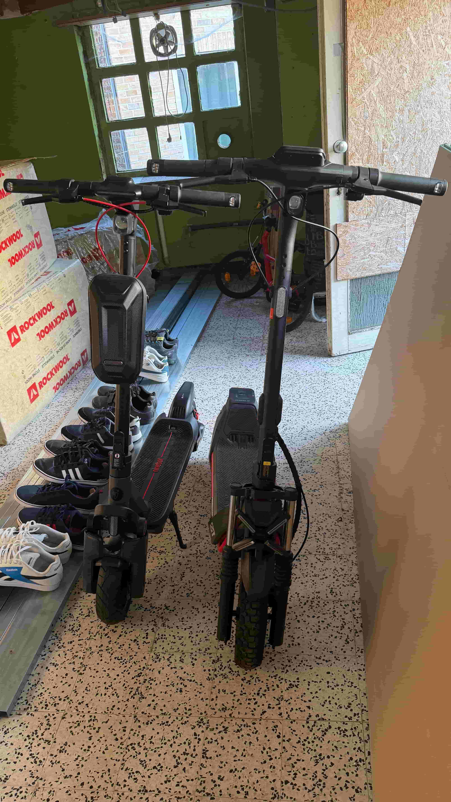

Pourquoi la trottinette électrique ?
Il y a deux ans, on m'a volé mon vélo pliant de la marque TERN. Ce vol, frustrant au départ, s'est transformé en opportunité. J'ai découvert la trottinette électrique pour mes courses quotidiennes, et je n'ai plus jamais regardé en arrière.
Aujourd'hui, je possède deux trottinettes de la marque Segway : le ZT3 Pro et le Max G3. Ce site raconte mon parcours, mes choix, et pourquoi je ne me sépare plus de ces engins.
